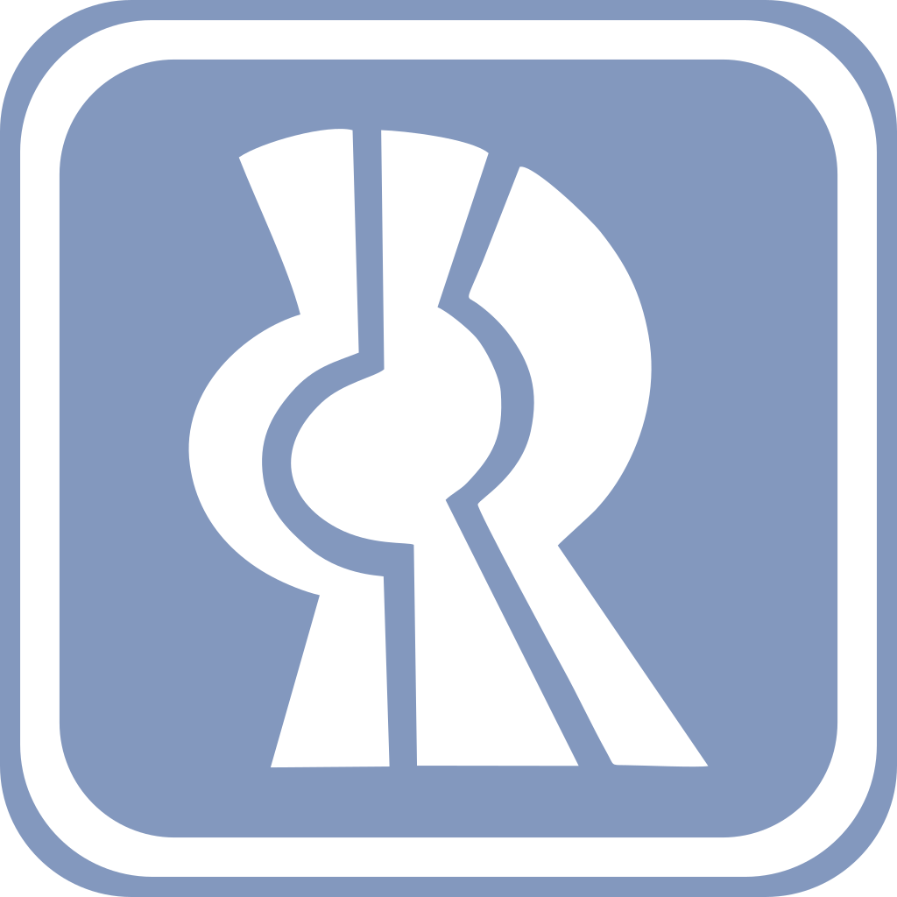

<ion-content class="background" scroll="false">

    <ion-menu contentId="main-contentProfe" >
        <ion-header>
          <ion-toolbar color="tertiary" id="nombreUsuarioMenuProfes" style="text-align: center;">
            
          </ion-toolbar>
        </ion-header>
        <ion-content class="ion-padding">
            
          <div style="position: absolute; left: 4px; color: transparent;" id="codigoUsuarioMenuProfes" ></div>
          <ion-button (click)="menu()" color="success" style="position: absolute; left:12px; top:80%; width: 150px; height: 30px;" >Menú</ion-button>
          <ion-button (click)="cerrar()" color="danger" style="position: absolute; left:12px; top:90%; width: 150px; height: 30px;">Cerrar sesión</ion-button>
        </ion-content> 
      </ion-menu>


    <div (click)="openMenu()" id="main-contentProfe" class="containerBtnMenu">

    <ion-button slot="start" class="btnMenu" >
        <ion-menu-button></ion-menu-button>
        
    </ion-button>
    
    </div>
    
    <div fixed class="usuario">
        <div id="nombreUsuarioProfes"></div>
    </div>
    
    <ion-text class="text">Ingresa nombre o clave</ion-text> 

    <div class="barraBusquedaContainer">   
        <ion-icon class="icon" name="search-circle-outline"></ion-icon> 
        <ion-input class="barraBusqueda" placeholder=" Buscar..." [(ngModel)]="busqueda" id="busqueda" (ionChange)="mostrarResultados()" (click)="mostrarTeclado()"> </ion-input>
    </div>

    <ion-content class="resultados" [scrollY]="true">
        <ion-list class="lista" no-lines>
            <ion-list-header *ngFor="let resultado of resultados;" (click)="BuscarMateriaProfe(resultado)" class="tarjeta">
                <div  class="textoBusqueda">{{resultado.text}}</div>
            </ion-list-header>
        </ion-list>
    </ion-content>
    
</ion-content>
